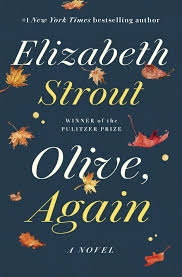

happiness does not necessary means laughter or smiles. Happiness is the well being of the heart that comes with doing what one enjoys most Everyone has diffrent sources of joy.some in active activities while others in more laid activities.I am what most people will call an introvert but a not the normal every day introvert. I am noisy ...more like italk alot when comfortable and a turtle shell when am not. Novels are an escape from reality .something am sure we all need at a point in life. In books you become part of the characters ,you understand their pains and joys . You hope that the plots and ends always have a happy ending
